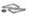

RÉSUMÉ DES CARACTÉRISTIQUES DU PRODUIT
ANSM - Mis à jour le : 03/12/2012
GLICLAZIDE BGR 30 mg, comprimé à libération modifiée
2. COMPOSITION QUALITATIVE ET QUANTITATIVE
Gliclazide .......................................................................................................................................... 30 mg
Pour un comprimé à libération modifiée.
Pour la liste complète des excipients, voir rubrique 6.1.
Comprimé à libération modifiée.
Comprimé allongé blanc gravé sur les deux faces (« DIA 30 » sur une et sur l'autre).
4.1. Indications thérapeutiques
Diabète non insulino-dépendant (de type 2) chez l'adulte, lorsque le régime alimentaire, l'exercice physique et la réduction pondérale seuls ne sont pas suffisants pour obtenir l'équilibre glycémique.
4.2. Posologie et mode d'administration
Il est recommandé d’avaler le(s) comprimé(s) en entier.
En cas d’oubli d’une dose, la dose du lendemain ne doit pas être augmentée.
Comme pour tout agent hypoglycémiant, la posologie doit être adaptée en fonction de la réponse métabolique individuelle de chaque patient (glycémie, HbA1c).
Dose initiale
La dose initiale recommandée est de 30 mg par jour.
· si le contrôle glycémique est satisfaisant, cette posologie peut être adoptée comme traitement d’entretien,
· si le contrôle glycémique n'est pas satisfaisant, la posologie peut être augmentée à 60, 90 ou 120 mg par jour, par paliers successifs, en respectant un intervalle de 1 mois au minimum entre chaque palier, sauf chez les patients pour lesquels la glycémie ne diminue pas après deux semaines de traitement. Dans ce cas, il est possible de proposer une augmentation de la posologie dès la fin de la deuxième semaine de traitement.
La dose maximale recommandée est de 120 mg par jour.
Relais de GLICLAZIDE 80 mg, comprimés par GLICLAZIDE BGR 30 mg, comprimés à libération modifiée :
1 comprimé de GLICLAZIDE 80 mg est comparable à 1 comprimé de GLICLAZIDE BGR 30 mg. Par conséquent, le relais peut être fait à condition de suivre avec attention l'évolution de la glycémie.
Relais d’un autre anti-diabétique oral par GLICLAZIDE BGR 30 mg :
GLICLAZIDE BGR 30 mg peut prendre le relais d’un autre traitement antidiabétique oral.
Dans ce cas, la posologie et la demi-vie de l’antidiabétique précédent doivent être prises en compte.
Le relais se fera en général sans période de transition, en commençant de préférence par une posologie de 30 mg. La posologie sera ensuite adaptée comme indiqué ci-dessus, en fonction de la réponse glycémique de chaque patient.
En cas de relais d’un sulfamide hypoglycémiant à demi-vie prolongée, une fenêtre thérapeutique de quelques jours peut s’avérer nécessaire afin d’éviter un effet additif des deux produits qui risque d’entraîner une hypoglycémie.
Lors de ce relais, il est recommandé de suivre la même procédure que lors de l’instauration d’un traitement par GLICLAZIDE BGR 30 mg, c’est-à-dire de commencer à la posologie de 30 mg par jour, puis d'augmenter la posologie par paliers successifs, en fonction des résultats métaboliques.
Association aux autres antidiabétiques oraux
GLICLAZIDE BGR 30 mg peut être associé aux biguanides, aux inhibiteurs de l’alpha-glucosidase ou à l’insuline.
Chez les patients insuffisamment équilibrés avec GLICLAZIDE BGR 30 mg, un traitement associé par insuline peut être instauré sous stricte surveillance médicale.
Populations particulières
Sujets âgés
GLICLAZIDE BGR 30 mg sera prescrit selon le même schéma posologique que chez des sujets de moins de 65 ans.
Patients atteints d’une insuffisance rénale
Chez les patients ayant une insuffisance rénale faible à modérée, le schéma posologique sera le même que chez les sujets ayant une fonction rénale normale, mais avec une surveillance attentive.
Ces données ont été confirmées au cours d’essais cliniques.
Patients à risque d’hypoglycémie :
· états de dénutrition ou de malnutrition,
· pathologies endocriniennes sévères ou mal compensées (insuffisance anté-hypophysaire, hypothyroïdie, insuffisance surrénale),
· sevrage d’une corticothérapie prolongée et/ou à forte dose,
· pathologie vasculaire sévère (coronaropathie sévère, atteinte carotidienne sévère, pathologie vasculaire diffuse) ;
Il est recommandé de débuter systématiquement le traitement à la dose minimale de 30 mg/jour.
Population pédiatrique
La sécurité et l’efficacité de GLICLAZIDE BGR 30 mg n’ont pas été établies chez les enfants et les adolescents.
Il n'existe pas de données chez l'enfant.
· diabète de type 1 ;
· pré-coma et coma diabétiques, acido-cétose diabétique ;
· insuffisance rénale ou hépatique sévère : dans ces situations, il est recommandé de recourir à l’insuline ;
· traitement par le miconazole (voir rubrique 4.5) ;
· allaitement (voir rubrique 4.6).
4.4. Mises en garde spéciales et précautions d'emploi
Ce traitement ne sera prescrit que si le patient est susceptible de s'alimenter régulièrement (y compris prise de petit-déjeuner). Il est important d'absorber régulièrement des hydrates de carbone, le risque d'hypoglycémie étant majoré en cas de repas pris tardivement, d'alimentation insuffisante ou pauvre en hydrates de carbone. L'hypoglycémie peut survenir plus particulièrement en période de régime hypocalorique, après un effort important ou prolongé, après ingestion d'alcool, ou lors de l'administration d'une association d'agents hypoglycémiants.
Des hypoglycémies peuvent survenir après administration de sulfamides hypoglycémiants (voir rubrique 4.8). Certains épisodes peuvent être sévères et prolongés. Une hospitalisation peut alors s'avérer nécessaire et le resucrage doit être éventuellement poursuivi sur plusieurs jours.
Une sélection soigneuse des patients, de la posologie utilisée ainsi qu'une information adéquate du patient sont nécessaires pour diminuer le risque d’hypoglycémies.
Facteurs favorisant le risque d’hypoglycémie
· refus ou incapacité du patient à coopérer (particulièrement chez les sujets âgés) ;
· malnutrition, horaire irrégulier des repas, repas sauté, période de jeûne ou modification du régime ;
· déséquilibre entre exercice physique et prise d’hydrates de carbone ;
· insuffisance rénale ;
· insuffisance hépatique sévère ;
· surdosage en GLICLAZIDE BGR ;
· certains désordres endocriniens : troubles thyroïdiens, insuffisance hypophysaire et surrénale ;
· administration concomitante d’autres médicaments (voir rubrique 4.5).
Insuffisances rénale et hépatique : la pharmacocinétique et/ou la pharmacodynamie du gliclazide peuvent être modifiées chez les patients présentant une insuffisance hépatique ou une insuffisance rénale sévère. Chez ces patients, l'hypoglycémie pouvant être prolongée, une prise en charge appropriée doit être instituée.
Information du patient
Les risques d'hypoglycémie, ses symptômes (voir rubrique 4.8), son traitement, ainsi que les conditions qui y prédisposent, doivent être expliquées au patient et à sa famille.
Le patient doit être informé en particulier de l'importance du respect du régime alimentaire, de la nécessité d'effectuer un exercice physique régulier et de contrôler régulièrement la glycémie.
Déséquilibre glycémique : l'équilibre glycémique d'un patient traité par un antidiabétique oral peut être modifié en cas de survenue des événements suivants : fièvre, traumatisme, infection ou intervention chirurgicale.
Dans certains cas, il peut être nécessaire de recourir à l'insuline.
L'efficacité hypoglycémiante de tout antidiabétique oral, y compris le gliclazide, peut s’atténuer au cours du temps chez de nombreux patients : ceci peut être lié à une aggravation du diabète ou à une diminution de la réponse au traitement. Ce phénomène est appelé échec secondaire pour le distinguer de l'échec primaire, dans lequel le médicament est inefficace dès la première utilisation. Avant de classer un patient parmi les échecs secondaires, on évaluera les possibilités d’ajustement de la dose et du suivi du régime alimentaire.
Analyses biologiques : la mesure du taux d’hémoglobine glyquée (ou de la glycémie à jeun) est recommandée pour évaluer le contrôle glycémique. Une autosurveillance glycémique peut aussi être pratiquée.
Les médicaments de la classe des sulfonylurées sont susceptibles d’entraîner une anémie hémolytique chez les sujets porteurs d’un déficit enzymatique en G6PD (glucose-6-phosphate déshydrogènase). Le gliclazide appartenant à cette classe, des précautions doivent être prises chez les patients déficients en G6PD et un traitement appartenant à une autre classe thérapeutique que les sulfonylurées doit être envisagé.
4.5. Interactions avec d'autres médicaments et autres formes d'interactions
1) Les produits suivants sont susceptibles de majorer l'hypoglycémie
Association contre-indiquée
+ Miconazole (voie générale, gel buccal)
Augmentation de l'effet hypoglycémiant avec survenue possible de manifestations hypoglycémiques, voire de coma.
Associations déconseillées
+ Phénylbutazone (voie générale)
Augmentation de l'effet hypoglycémiant des sulfamides hypoglycémiants (déplacement de leurs liaisons aux protéines plasmatiques et /ou diminution de leur élimination).
Utiliser de préférence un autre anti-inflammatoire sinon prévenir le patient et renforcer l'autosurveillance : adapter s'il y a lieu la posologie pendant le traitement par l'anti-inflammatoire et après son arrêt.
+ Alcool
Augmentation de la réaction hypoglycémique (inhibition des réactions de compensation) pouvant faciliter la survenue de coma hypoglycémique.
Eviter la prise de boissons alcoolisées et de médicaments contenant de l'alcool.
Associations nécessitant des précautions d'emploi
+ Du fait de la majoration de l'effet hypoglycémiant, dans certains cas, des hypoglycémies peuvent survenir lors d'un traitement concomitant par les médicaments suivants
Autres antidiabétiques (insuline, acarbose, metformine, thiazolidinediones, inhibiteurs de la dipeptidyl peptidase-4, agonistes des récepteurs GLP-1), bêta-bloquants, fluconazole, inhibiteur de l'enzyme de conversion (captopril, énalapril), antagonistes des récepteurs-H2, IMAO, sulfonamides, clarithromycine et anti-inflammatoires non stéroïdiens.
2) Les produits suivants risquent d'entraîner une augmentation de la glycémie.
Association déconseillée
+ Danazol
Effet diabétogène du danazol.
Si l'association ne peut être évitée, prévenir le patient et renforcer la surveillance glycémique et urinaire.
Adapter éventuellement la posologie de l'antidiabétique pendant le traitement par le danazol et après son arrêt.
Associations nécessitant des précautions d'emploi
+ Chlorpromazine (neuroleptiques)
A fortes posologies (> 100 mg par jour de chlorpromazine), élévation de la glycémie (diminution de la libération d'insuline).
Prévenir le patient et renforcer la surveillance glycémique. Adapter éventuellement la posologie de l'antidiabétique pendant le traitement par le neuroleptique et après son arrêt.
+ Glucocorticoïdes (voies générale et locale : intra-articulaire, cutanée et lavement rectal) et tétracosactide:
Elévation de la glycémie avec parfois cétose (diminution de la tolérance aux glucides par les corticoïdes).
Prévenir le patient et renforcer la surveillance glycémique, surtout en début de traitement. Adapter éventuellement la posologie de l'antidiabétique pendant le traitement par les corticoïdes et après leur arrêt.
+ Ritodrine, salbutamol, terbutaline :
(Voie I.V).
Elévation de la glycémie par les bêta-2 stimulants.
Renforcer la surveillance glycémique. Passer éventuellement à l'insuline.
Associations à prendre en compte
+ Anticoagulants (warfarine….)
Les sulfamides hypoglycémiants peuvent entraîner une majoration de l'effet anticoagulant pendant le traitement.
Une adaptation de la posologie de l'anticoagulant peut être nécessaire.
Il n'existe pas de donnée clinique concernant l'administration du gliclazide chez la femme enceinte; peu de données existent avec d'autres sulfonylurées.
Chez l'animal, le gliclazide n'est pas tératogène.
Le contrôle du diabète doit être obtenu avant la conception afin de réduire les risques de malformations congénitales dus à un diabète mal équilibré.
Pendant la grossesse, les antidiabétiques oraux ne sont pas appropriés, l'insuline constitue alors le traitement de choix du diabète. Il est recommandé d'effectuer le relais de l'antidiabétique oral par l'insuline lorsqu'une grossesse est envisagée ou dès la découverte de celle-ci.
Il n'existe pas de donnée sur le passage du gliclazide ou de ses métabolites dans le lait maternel. Compte tenu du risque d'hypoglycémie néo-natale, le gliclazide est contre-indiqué chez la femme qui allaite.
4.7. Effets sur l'aptitude à conduire des véhicules et à utiliser des machines
Selon l’expérience clinique avec le gliclazide, les effets indésirables suivants ont été rapportés :
Hypoglycémies
Comme pour les autres sulfamides hypoglycémiants, le traitement par GLICLAZIDE BGR 30 mg peut entraîner une hypoglycémie, en particulier en cas de repas pris à intervalles irréguliers et en cas de saut d'un repas.
Les symptômes éventuels sont : céphalées, faim intense, nausées, vomissements, fatigue, troubles du sommeil, agitation, agressivité, diminution de la concentration, de la vigilance et des réactions, dépression, confusion, troubles visuels et troubles de la parole, aphasie, tremblements, parésie, troubles sensoriels, vertiges, sensation d’impuissance, perte de maîtrise de soi, délire, convulsions, respiration superficielle, bradycardie, somnolence, perte de connaissance voire coma et pouvant conduire à une issue fatale.
D'autre part, des signes de contre-régulation adrénergiques peuvent être observés : hypersudation, peau moite, anxiété, tachycardie, hypertension, palpitations, angor et arythmie cardiaque.
Les symptômes disparaissent en général après la prise d’hydrates de carbone (glucides). Par contre, les édulcorants artificiels n’ont aucun effet. L’expérience avec les autres sulfamides hypoglycémiants montre que malgré des mesures initialement efficaces, une hypoglycémie peut récidiver.
En cas d’hypoglycémie sévère ou prolongée, même temporairement contrôlée par une absorption de sucre, un traitement médical immédiat voire une hospitalisation peuvent s’imposer.
Troubles gastro-intestinaux
Des troubles gastro-intestinaux à type de douleurs abdominales, nausées, vomissements, dyspepsie, diarrhées, constipation, ont été rapportés ; ils peuvent être évités ou diminués si le traitement est pris pendant le petit-déjeuner.
Les effets indésirables suivants ont été plus rarement rapportés :
· Eruptions cutanéo-muqueuses : rash, prurit, urticaire, angio-œdème, érythème, éruptions maculopapuleuses, réactions bulleuses (tels que le syndrome de Stevens-Johnson et la nécrolyse épidermique toxique).
· Troubles hématologiques : ils sont rares et incluent anémie, leucopénie, thrombocytopénie, granulocytopénie. Ces anomalies sont généralement réversibles à l'arrêt du traitement.
· Troubles hépato-biliaires : élévation des enzymes hépatiques (ASAT, ALAT, phosphatases alcalines), hépatites (cas isolés). Interrompre le traitement en cas d'apparition d'un ictère cholestatique. En règle générale, ces symptômes régressent à l'arrêt du traitement.
· Troubles visuels : des troubles visuels transitoires dus aux variations de la glycémie peuvent survenir en particulier lors de l’instauration du traitement.
Effets de classe
· Comme pour les autres sulfamides hypoglycémiants, les effets indésirables suivants ont été observés : érythrocytopénie, agranulocytose, anémie hémolytique, pancytopénie, vasculite allergique, hyponatrémie, augmentation du taux des enzymes hépatiques, insuffisance hépatique (cholestase et ictère) voire hépatite qui ont régressé à l’arrêt du traitement ; seuls quelques cas ont conduit à une insuffisance hépatique mettant en jeu le pronostic vital.
Un surdosage en sulfamides hypoglycémiants peut entraîner une hypoglycémie.
Les symptômes modérés d'hypoglycémie, sans perte de connaissance ni signe neurologique, doivent absolument être corrigés par un apport glucidique, une adaptation de la posologie et/ou une modification du régime alimentaire. Une surveillance stricte doit être poursuivie par le médecin jusqu'à ce que le patient soit hors de danger.
Les réactions hypoglycémiques sévères, avec coma, convulsions ou autres troubles neurologiques sont possibles et constituent une urgence médicale nécessitant l'hospitalisation immédiate du patient.
Si un coma hypoglycémique est diagnostiqué ou suspecté, le patient doit recevoir une injection intraveineuse rapide de 50 mL d'une solution glucosée concentrée (20 à 30 %), suivie d'une perfusion continue de solution glucosée plus diluée (à 10%) à la vitesse nécessaire au maintien d'une glycémie au-dessus de 1 g/L.
Une surveillance étroite du patient sera instaurée et renforcée si besoin par le médecin en fonction de l'état du patient.
Du fait de la forte liaison du gliclazide aux protéines, une dialyse n'est pas nécessaire.
5. PROPRIETES PHARMACOLOGIQUES
5.1. Propriétés pharmacodynamiques
Classe pharmacothérapeutique : sulfamide hypoglycémiant - dérivé de l’urée, code ATC : A10BB09
(Voies digestives et métabolisme)
Le gliclazide est un sulfamide hypoglycémiant, antidiabétique oral, possédant un hétérocycle azoté à liaison endocyclique, ce qui le différencie des autres sulfamides. Le gliclazide diminue la glycémie en stimulant la sécrétion d’insuline par les cellules bêta des îlots de Langerhans. L'augmentation de la sécrétion d’insuline et de peptide-C qui suit la prise d'un repas persiste après 2 ans de traitement.
En plus de ces propriétés métaboliques, le gliclazide présente des propriétés hémovasculaires.
Effets sur la libération d’insuline
Chez le diabétique de type 2, en présence de glucose, le gliclazide restaure le pic précoce d'insulinosécrétion, et augmente la seconde phase d'insulinosécrétion. Une augmentation significative de la réponse insulinique est observée en réponse à un repas ou une absorption de glucose.
Propriétés hémovasculaires
Le gliclazide diminue le processus de microthrombose par deux mécanismes qui pourraient être impliqués dans les complications du diabète :
· une inhibition partielle de l'agrégation et de l'adhésivité plaquettaires ainsi qu'une diminution des marqueurs d'activation plaquettaire (bêta thromboglobuline, thromboxane B2) ;
· une action sur l'activité fibrinolytique de l'endothélium vasculaire avec une augmentation de l'activité t-PA.
5.2. Propriétés pharmacocinétiques
Absorption
Après administration orale, la concentration plasmatique augmente progressivement jusqu'à la 6ème heure pour atteindre un plateau entre la 6ème et la 12ème heure.
Les variations intra-individuelles sont faibles.
L’absorption du gliclazide est complète. La prise alimentaire ne modifie ni la vitesse ni le taux d'absorption.
Distribution
La fixation aux protéines plasmatiques est d’environ 95 %. Le volume de distribution est d’environ 30 litres. Une prise unique quotidienne de GLICLAZIDE BGR 30 mg permet le maintien d’une concentration plasmatique efficace de gliclazide pendant 24 heures.
Biotransformation
Le gliclazide est principalement métabolisé au niveau hépatique. L'excrétion est essentiellement urinaire ; moins de 1% est retrouvé sous forme inchangée dans les urines. Aucun métabolite actif circulant n'a été détecté.
Elimination
La demi-vie d’élimination du gliclazide est de 12 à 20 heures.
Linéarité / Non linéarité
Jusqu’à la dose de 120 mg, il existe une relation linéaire entre la dose administrée et l’aire sous la courbe des concentrations (AUC).
Populations particulières
Sujets âgés
Chez le sujet âgé, aucune modification cliniquement significative des paramètres pharmacocinétiques n'a été observée.
5.3. Données de sécurité préclinique
Les données précliniques, basées sur des études de toxicité chronique et de génotoxicité, n'ont mis en évidence aucun risque pour l'homme. Aucune étude de cancérogénèse à long terme n'a été réalisée.
Aucun effet tératogène n'a été rapporté chez l'animal; seule une diminution du poids des fœtus a été observée chez des animaux ayant reçu des doses 25 fois plus élevées que la posologie maximale recommandée chez l'homme.
Hydrogénophosphate de calcium dihydraté, maltodextrine, hypromellose, stéarate de magnésium, silice colloïdale anhydre.
Sans objet.
3 ans.
6.4. Précautions particulières de conservation
Pas de précautions particulières de conservation.
6.5. Nature et contenu de l'emballage extérieur
7, 10, 14, 20, 28, 30, 56, 60, 84, 90, 100, 112, 120, 180 ou 500 comprimés sous plaquettes thermoformées (PVC/Aluminium).
6.6. Précautions particulières d’élimination et de manipulation
Pas d'exigences particulières.
7. TITULAIRE DE L’AUTORISATION DE MISE SUR LE MARCHE
BIOGARAN
15, BOULEVARD CHARLES DE GAULLE
92700 COLOMBES
8. NUMERO(S) D’AUTORISATION DE MISE SUR LE MARCHE
· 390 492-0 ou 34009 390 492 0 5: 7 comprimés sous plaquettes thermoformées (PVC/Aluminium).
· 390 493-7 ou 34009 390 493 7 3: 10 comprimés sous plaquettes thermoformées (PVC/Aluminium).
· 390 494-3 ou 34009 390 494 3 4: 14 comprimés sous plaquettes thermoformées (PVC/Aluminium).
· 390 496-6 ou 34009 390 496 6 3: 20 comprimés sous plaquettes thermoformées (PVC/Aluminium).
· 390 497-2 ou 34009 390 497 2 4: 28 comprimés sous plaquettes thermoformées (PVC/Aluminium).
· 390 498-9 ou 34009 390 498 9 2: 30 comprimés sous plaquettes thermoformées (PVC/Aluminium).
· 390 499-5 ou 34009 390 499 5 3: 56 comprimés sous plaquettes thermoformées (PVC/Aluminium).
· 390 500-3 ou 34009 390 500 3 4: 60 comprimés sous plaquettes thermoformées (PVC/Aluminium).
· 390 502-6 ou 34009 390 502 6 3: 84 comprimés sous plaquettes thermoformées (PVC/Aluminium).
· 390 503-2 ou 34009 390 503 2 4: 90 comprimés sous plaquettes thermoformées (PVC/Aluminium).
· 390 504-9 ou 34009 390 504 9 2: 100 comprimés sous plaquettes thermoformées (PVC/Aluminium).
· 390 505-5 ou 34009 390 505 5 3: 112 comprimés sous plaquettes thermoformées (PVC/Aluminium).
· 390 506-1 ou 34009 390 506 1 4: 120 comprimés sous plaquettes thermoformées (PVC/Aluminium).
· 418 999-7 ou 34009 418 999 7 3: 180 comprimés sous plaquettes thermoformées (PVC-Aluminium).
· 574 168-1 ou 34009 574 168 1 2: 500 comprimés sous plaquettes thermoformées (PVC/Aluminium).
9. DATE DE PREMIERE AUTORISATION/DE RENOUVELLEMENT DE L’AUTORISATION
[à compléter par le titulaire]
10. DATE DE MISE A JOUR DU TEXTE
[à compléter par le titulaire]
Sans objet.
12. INSTRUCTIONS POUR LA PREPARATION DES RADIOPHARMACEUTIQUES
Sans objet.
Liste I.